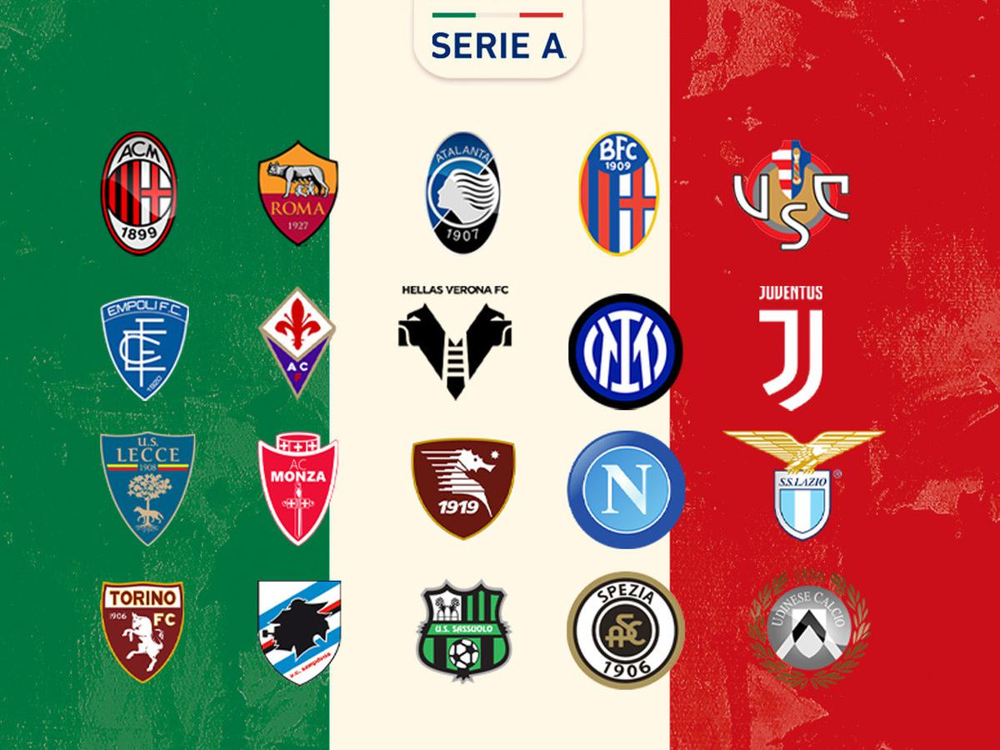
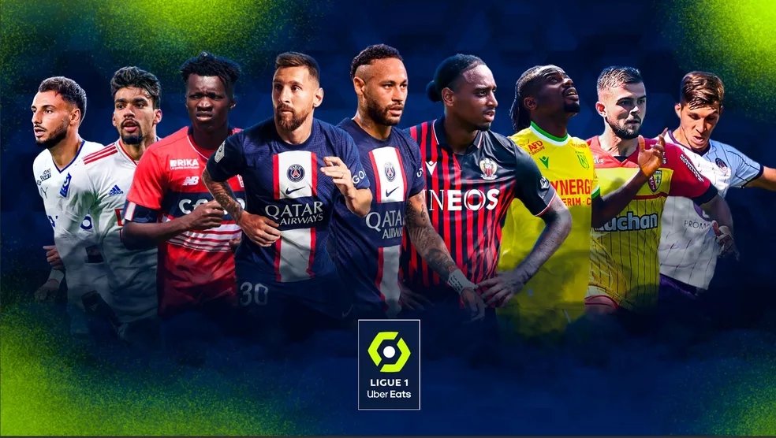
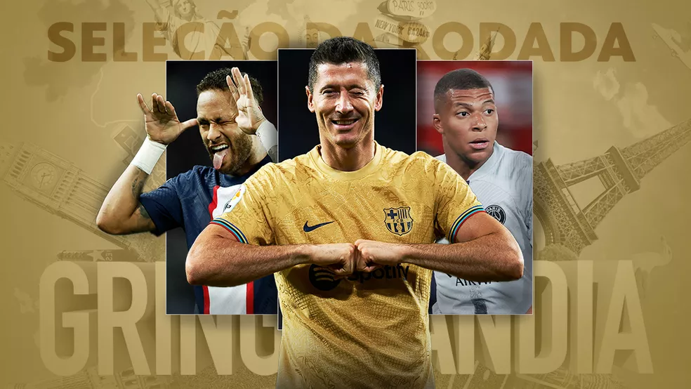

Roma vence, e Juventus empata sem gols com a Sampdoria no Italiano.
Time da capital bate Cremonese e segue com 100% de aproveitamento no início da competição.
Equipes de José Mourinho e Massimiliano Allegri se enfrentam na próxima rodada. A Roma mantém 100% de aproveitamento e está na terceira posição com seis pontos, atrás apenas de Napoli e Internazionale por conta dos critérios de desempate. A Juventus tem quatro e ocupa o quarto lugar.

PSG faz 7 a 1 sobre o LOSC, Neymar e Mbappé são os destaques!
O PSG termina a terceira rodada do Campeonato Francês como líder da competição, com nove pontos em três jogos. São 100% de aproveitamento, 16 gols marcados e apenas três sofridos.

SELEÇÃO DA RODADA:
SELEÇÃO DA RODADA:
Neymar, Mbappé e Lewandowski formam ataque.
Neymar fez dois gols e deu três assistências!
Robert Lewandowski marcous duas vezes e deu uma assistência.
Kylian Mbappé fez um hat-trick.